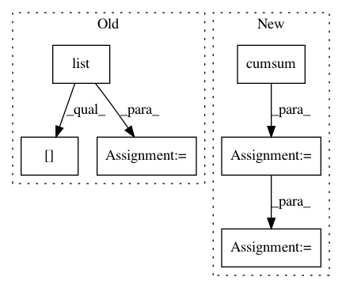

32d73ccb0d80db3727775fb9928f5f151ddaaab5,nt/speech_enhancement/mask_estimation.py,,simple_ideal_soft_mask,#,44
Before Change
// Permute if nessesary
if feature_dim != -2 or source_dim != -1:
r = list(range(np.ndim(X)))
r[feature_dim], r[-2] = r[-2], r[feature_dim]
r[source_dim], r[-1] = r[-1], r[source_dim]
X = np.transpose(X, axes=r)
power = np.einsum("...dk,...dk->...k", X.conjugate(), X)
After Change
if not tuple_output:
return np.squeeze(mask, axis=feature_dim)
else:
sizes = np.cumsum([o.shape[source_dim] for o in input])
output = np.split(mask, sizes[:-1], axis=source_dim)
for i in range(len(output)):
if output[i].shape[source_dim] is 1:
output[i] = np.squeeze(output[i])
// ToDo: Determine, why the commented code is not working
// output[i] = np.squeeze(output[i], axis=(source_dim,feature_dim))
else:
output[i] = np.squeeze(output[i], axis=feature_dim)
return output
def quantile_mask(observations, quantile_fraction=0.98, quantile_weight=0.999):
In pattern: SUPERPATTERN
Frequency: 3
Non-data size: 6
Instances
Project Name: fgnt/pb_bss
Commit Name: 32d73ccb0d80db3727775fb9928f5f151ddaaab5
Time: 2015-10-06
Author: cbj@mail.uni-paderborn.de
File Name: nt/speech_enhancement/mask_estimation.py
Class Name:
Method Name: simple_ideal_soft_mask
Project Name: bethgelab/foolbox
Commit Name: b939c910d036d8197ac7c63e5f188bc4c4fc4803
Time: 2019-07-20
Author: rzrolandzimmermann@gmail.com
File Name: foolbox/batching.py
Class Name:
Method Name: run_parallel
Project Name: scipy/scipy
Commit Name: 6f6513963c3f568e5ad985a17a4aee0192223935
Time: 2019-07-17
Author: pete.mahler.larsen@gmail.com
File Name: scipy/spatial/_spherical_voronoi.py
Class Name: SphericalVoronoi
Method Name: _calc_vertices_regions